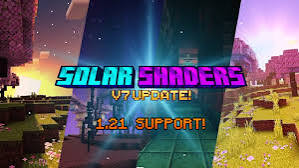
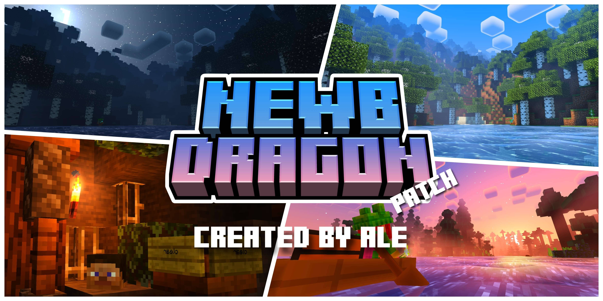

Minecraft Bedrock Shaders

Solar Shader
Realistic lighting, beautiful colors, and soft shadows—this shader brings sunlight, smooth skies, and better water to Minecraft Bedrock! Great for screenshots and daily playing.
Download Solar Shader (.mcpack)
How to use: Download & open the .mcpack file in Minecraft Bedrock. Enable it from Resource Packs.

Newb Shader
Easy-to-run, clean shader for all devices. Sharper shadows, brighter skies, cool water, and smooth nights. Perfect if you want performance plus better looks!
Download Newb Complementary Reimagined Shader (.mcpack)
How to use: Download & open the .mcpack file in Bedrock/PE. Activate from Resource Packs in your world!
Follow:
@vanshu_ag_72